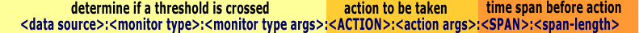

Although designed as a real-time data collection and trending tool, real-time alerts (or alarms) are a natural extended functionality for Cricket. Unfortunately, because they are not a part of the core design, the alert mechanisms in Cricket are not as cleanly implemented or efficient as they could be. If your interest is purely in a tool to generate real-time alerts, then Cricket is probably not the best choice. But if you already utilize Cricket for data collection and real-time trend analysis and you have the additional need for some light real-time alerting mechanism, then Cricket can meet your needs.
In Cricket, the alert mechanism is called a Monitor
Threshold. Monitor thresholds are set (or enabled) for specific
data sources through the “monitor-thresholds”
target dictionary tag. After the data collection pass, Cricket processes
each monitor threshold by retrieving the most recent value of a data
source from the RRD file and applying some criteria specific to the
monitor threshold type. This criteria generates either a pass or fail
condition. Depending on the setting of the persistent-alarms tag for the
target, Cricket executes a specified action.
Note that the most recent value of a data source from the RRD file will
not necessarily agree with the most recent value fetched from by the
collector because RRDtool interpolates. For those familiar with RRD tool
internals, the “most recent value” is retreived from the
first RRA in the file with a consolidation function of
“AVERAGE”. The order of RRAs in the file is
specified by the “rra” tag in the targetType
dictionary.
Note that a monitor threshold configured for a multi-instance (aka vector instances) target will be checked and an action possibly executed for each instance. Monitor thresholds are not supported for multi-targets (as multi-targets are purely a construct of the Cricket grapher).
monitor-thresholds = "<monitor-threshold> [, <monitor-threshold> ...]"

One of the six supported types:
Case insensitive.
One of six supported actions:
Case insensitive.
Please consider these as examples on using monitor thresholds, not best practices.
target --default--
mail-pgm = /usr/bin/mailx
trap-address = 127.0.0.1
persistent-alarms = true
target network-link-1
monitor-thresholds =
"ifInOctets : value : n : 25000 : SNMP,
ifInOctets : quotient : <80pct : : %rrd-max-octets% : SNMP,
ifInOctets : relation : <10 pct : : : 300 : MAIL : %mail-pgm% : me\\\@mydomain.com,
ifInErrors : quotient : 0.1 pct : : ifInUcastPackets : SNMP"
target pop-2
persistent-alarms = false
monitor-thresholds = "users : hunt : 40 : pop-1 : users : FILE : /var/log/cricket-alerts"
target router-chassis
persistent-alarms = false
monitor-thresholds =
"cpu1min : value : n : 60 : META : router-cpu : yellow,
cpu1min : value : n : 90 : META : router-cpu : red : SPAN : 3,
mem5minUsed : quotient : >60pct : : processorRam: META"
target router-chassis
persistent-alarms = false
monitor-type = router-chassis
monitorType router-chassis
monitor-thresholds =
"cpu1min : value : n : 60 : META : router-cpu : yellow,
cpu1min : value : n : 90 : META : router-cpu : red : SPAN : 3,
mem5minUsed : quotient : >60pct : : processorRam: META"
Note: Make sure to include spaces or tabs leading each line related to a target as above. Or Cricket will not process the line.
target network-link-1
monitor-thresholds =
"ifInOctets : value : n : 250000 : SNMP,
ifInOctets : quotient : <80pct : : %rrd-max-octets% : SNMP,
ifInOctets : relation : <10 pct : : : 300 : MAIL : %mail-pgm% : me\\\@mydomain.com,
ifInErrors : quotient : 0.1 pct : : ifInUcastPackets : SNMP"
The first target, “network-link-1”,
has three monitor thresholds.
ifInOctets”, exceeds 2Mbps (2.000.000
bits / 8 = 250.000 octets). It is important to note that all
entries defined in the “--default--”
section will be inhereted by each target. In this case,
“persistent-alarms = true”, has a direct
impact when the action will be executed.
ifInOctets”, has a value that
is within 10% of the value recorded for the last interval (300
seconds ago; assuming an
“rrd-poll-interval” of 300 seconds). It
computes
“abs(ifInOctets_now - ifInOctets_then) / ifInOctets”
and compares this with 10% (0.1). If traffic levels have increased
more than 10% over the interval, it invokes “mailx”
to send a mail message to “me@mydomain.com”
(note the escaped backslash and escaped “@”).
This action will also be executed everytime the threshold is
crossed due to the inherited
“persistent-alarms”.
ifInErrors”, exceed 0.1% of input
packets, “ifInUcastPackets”. If
errors exceed this threshold, Cricket generates an SNMP trap.
target pop-2
persistent-alarms = false
monitor-thresholds =
"users : hunt : 40 : pop-1 : users : FILE : /var/log/cricket-alerts"
The second target, “pop-2”, has a single
monitor threshold.
/var/log/cricket-alerts” when a non-zero
number of users, “popUsers”, are on
“pop-2” yet “pop-1”
has not reached 40 users. Once “pop-1”
reaches 40 users, or “pop-2” returns to a
zero user count, the entry will be cleared from
the file. A target can always redefine a variable that was set in
the “--default--” section or inherited
from lower in the config tree. In this case
“persistent-alarms” are reset to the
default value of “false”. Hence, the
“FILE” action will be executed to set the
alarm when the alarm condition is first detected and once to clear
the alarm when the alarm condition is cleared.
target router-chassis
persistent-alarms = false
monitor-thresholds =
"cpu1min : value : n : 60 : META : router-cpu : yellow,
cpu1min : value : n : 90 : META : router-cpu : red : SPAN : 3,
mem5minUsed : quotient : >60pct : : processorRam: META"
The third target, “router-chassis”,
has a three monitor thresholds.
META” action is called with different
arguments.
SPAN” indicates there is an additional
condition where the monitor threshold will only trigger an alarm
when three consecutive monitor threshold tests fail. At the first
threshold test pass, the alarm will be cleared.
mem5minUsed” datasource divided by the
“processorRAM” datasource and if the
percentage is greater than 60% it will trigger a
“META” action. Note that no additional
arguments have been added to the “META”
action, this is by design, read the Actions section for details on
how to use this and other actions.
target router-chassis
persistent-alarms = false
monitor-type = router-chassis
monitorType router-chassis
monitor-thresholds =
"cpu1min : value : n : 60 : META : router-cpu : yellow,
cpu1min : value : n : 90 : META : router-cpu : red : SPAN : 3,
mem5minUsed : quotient : >60pct : : processorRam: META"
This is a variation on the third target, “router-chassis”,
has a no monitor thresholds. Instead it references a monitor-type. iThe monitor type holds the definitions for the monitor-thresholds. Which is similar in concept to a target-type. This way you only have to maintain your monitor-types instead of having to maintain possibly hundreds of target monitor-thresholds.
By default, the target tag
“persistent-alarms” is set to false. With
this setting, the first time a monitor threshold criteria fails, the
action is executed. Specifically, the
“Alarm()” subroutine in the
“Monitor.pm” module is invoked; the action
and its arguments are passed as arguments. If the criteria continues
to fail (at subsequent data collection passes), the action is not
executed again. After one or more failures, the first time the monitor
threshold criteria passes, the action is executed. In this case, the
“Clear()” subroutine in the
“Monitor.pm” module is invoked, with
appropriate action and action arguments. Thus the default behavior is
like a switch that toggles states when the result of the monitor
threshold criteria changes.
If the target tag “persistent-alarms” is
true, the action is executed (the “Alarm()”
subroutine is invoked) every time the monitor threshold criteria
fails. An action (and “Clear()” subroutine)
is still executed once the first time the criteria passes after a
string of failures. With “persistent-alarms”
set to true, monitor threshold behavior is like a bell. It keeps
ringing until the problem stops.
The monitor type determines the criteria used to check a monitor threshold.
exact”
These monitors are the simplest to use and configure, and allow you
to monitor a datasource for an exact match. This is useful in cases
where an enumerated (or boolean) SNMP object instruments a condition
where a transition to a specific state requires attention. For
example, a datasource might return either true or
false ,
depending on whether or not a power supply has failed. The exact
monitor expects one argument; the value on which the monitor will
trigger. For example,
“monitor-thresholds = "dsPowerFail:exact:1"”
would cause Cricket to send a trap when
the last value of the “dsPowerFail”
datasource in the RRD file for
this target is “1”.
dsPowerFail : exact : 1 : <ACTION> : […]
dsTempAlarm : exact : 1 : <ACTION> : […]
value”
The next simplest monitor type, value monitor thresholds take two
arguments, a minimum and maximum value. If the data source strays
outside of this interval, the monitor threshold criteria fails. To
omit the minimum or maximum value, use the character
“n”.
temperature : value : 30 : 90 : <ACTION> : […]
ifInOctets : value : n : 250000 : <ACTION> : […]
relation”
Relation monitor thresholds are very flexible. A relation monitor
considers the difference between two data sources (possibly from
different targets), or alternatively, the difference between two
temporally distinct values for the same data source. The first data
source is the data source for which the relation monitor threshold
is defined. The difference can be expressed as absolute value, or as
a percentage of the second data source (comparison) value. This
difference is compared to a threshold argument with either the
greater than or less than operator. The criteria fails when the
expression “<absolute or relative
difference> <either greater-than or less-than>
<threshold>” evaluates to false. The
four colon-delimited arguments for a relation monitor are:
>”) or less than
(“<”) symbol, and optionally followed
by the string “pct”. If omitted, greater
than is used by default and the expression
“difference > threshold” is evaluated.
“<10 pct”,
“>1000”, “50 pct”,
“>” and “500”
are all examples of valid thresholds.
-1.05, 5, 10.1, +5.
0”.
quotient”
Quotient monitor thresholds are similar to relation monitor
thresholds, except that they consider the quotient of two data
sources, or alternatively, the same data source at two different
time points. For a quotient monitor threshold, Cricket computes the
value of the first data source as a percentage of the value second
data source (such that 10 is 50% of 20). This percentage is then
compared to a threshold argument with either the greater than or
less than operator. The criteria fails when the expression
“<percentage> <either
greater-than or less-than> <threshold>”
evaluates to true. The four colon-delimited
arguments for a quotient monitor are:
>”) or less than
(“<”) symbol followed by the string
“pct”. If omitted, greater than is used
by default and the expression “difference > threshold” is evaluated.
-1.05, 5, 10.1, +5.
0”.
hunt”The hunt monitor threshold is designed for the situation where the data source serves as an overflow for another data source; that is, if one data source (the parent) is at or near capacity, then traffic will begin to appear on this (the monitored) data source. One application of hunt monitor thresholds is to identify premature rollover in a set of modem banks configured to hunt from one to the next. Specifically, the criteria of the hunt monitor threshold fails if the value of the monitored data source is non-zero and the current value of the parent data source falls below a specified capacity threshold. The three colon-delimited arguments for a hunt monitor are:
failures”
The failures monitor threshold is integrated with aberrant behavior
detection in RRDtool. This monitor checks the
“FAILURES” RRA for the target and
datasource. If the current value is “1”,
this indicates aberrant behavior. Aberrant behavior detection must
be enabled for the target, which requires RRDtool 1.1.x. This
threshold may be conditioned on the current value of the datasource.
In this case, the threshold is only triggered when both the
“FAILURES” RRA is
“1” and the current value of the data
source is within a specified range. This range is specified via two
colon-delimited arguments; the first is the min or
“n” to specify no lower bound and the
second is the max or “n” to specify no
upper bound.
After the monitor threshold is checked for the current value, Cricket may execute one of several actions. Each action requires one or more arguments, which appear as a colon-delimited list following the action tag in the monitor threshold specification.
SNMP: Generating a SNMP trap is the default action if the action tag is omitted from a monitor threshold specification. To support this default and for backwards compatibility, the action SNMP does not use the action arguments field in the monitor threshold specification. The SNMP action instead requires the attribute trap-address to be set for target. The traps Cricket sends are marked with the enterprise OID ".1.3.6.1.4.1.2595.1.1". The generic type is 6 and specific type is 4 for failure (violation) of the monitor threshold criteria and 5 for success (recall the trap is cleared on the first success after one or more failures). There are currently nine varbinds: the monitor type, the monitor threshold string, the target name, data source name, cricket user name (set to "cricket" on Win32 platforms), instance number (to distinguish targets with multiple instances), instance name, contact name (based on the html dictionary entry contact-name), and data value. These varbinds are set (and could be customized) in the sendMonitorTrap() subroutine in Monitor.pm.
MAIL: This action sends email to a specified address via a Berkeley mailx compatible mail program. The first action argument is the program to invoke to send email. It is assumed that this program is compatible with Berkeley mailx. That is, the program accepts piped input as the message body, and supports a "-s" command flag to specify the subject. If you don't have such a program on your system, you may wish to customize the code in the sendEmail() subroutine in Monitor.pm to utilize your email program. The second action argument is the recipient's email address. Note that as in the example, you may need to escape special characters. Both arguments are required. The mail message body includes the following information: the monitor type, the monitor threshold string, the target name, data source name, the value of the data source retrieved from the RRD file, and the instance number (to distinguish targets with multiple instances). To change the contents of the message, customize the sendEmail() subroutine in Monitor.pm.
FILE: This action appends and deletes entries (lines) from a file. When the monitor threshold criteria first fails, a line containing details in a space-delimited format is appended to the file specified as the action argument (the FILE action has only one argument). Subsequent failures do not add multiple lines to the file. The FILE action essentially ignores persistent-alarms = true (though some overhead is incurred to detect duplicate lines, so persistent-alarms should be set to false when possible for targets using the FILE action). When the monitor threshold passes again after one or more failures, the line is deleted from the file. The line details include the target name and the data source name. To include other details, customize the LogToFile() subroutine in Monitor.pm.
EXEC: This action executes a shell command or script. The first action argument is the shell command or script to execute when the monitor threshold criteria fails. The second action argument is the shell command or script to execute when the monitor threshold passes again after one or more failures. The EXEC action provides a mechanism by which automated corrective action can be taken.
FUNC: This action is similar to EXEC, except that a perl subroutine defined in the Cricket scope is executed. The first action argument is the function invoked when the monitor threshold criteria fails. The second action argument is the function invoked when the monitor threshold passes again after one or more failures. To use this action, you must first modify the entry in the func.pm module to set the global variable gMonFuncEnabled. Using this action requires customization (you must write the subroutines). While this mechanism provides complete flexibility in handling special cases, the invoked subroutines cannot easily accept arguments (this can be done, but the argument list must be included by name in the action arguments which can quickly become unwieldy). If your function requires access to arguments available in the Alarm() and Clear() functions, you might consider adding a new action tag (and sharing your work with the Cricket community).
META: This action is meant to be used to shared threshold monitoring event data with other external systems. This action does nothing. In the sense, that no external action is initiated. There is no mail sent, no SNMP trap generated or any other specific action. What it does is let cricket know the fact that an alarm has been generated or cleared. Cricket stores all active alarms in an internal format call meta files. These files are stored in the cricket-data directory along side each target.rrd file that has monitor-thresholds defined for it. The meta files store alarm data for all Action types.The monitor-threshold line itself and other data is stored in the meta file. Arguments are arbitrary.
Using this action requires customization (you must write the external interface script). The most common uses for this are for sharing event data with event management systems such as NetCool, BigBrother and others. Event management systems often support SNMP, proprietary agents or APIs. This permits a flexible way of interacting with these systems with something other than an SNMP trap.
To provide this, your external script must load the config-tree in memory, query it for active alarms and configured monitoring thresholds and send messages in the appropriate format to the event manager. An example script is provided in the util directory of the Cricket distribution, metaQuery.pl. Note that this is not to be mistaken with real time monitoring, as you have to wait for the collector run to be finished before querying the config-tree or else risk missing a new alarm until the next query.
Cricket monitoring thresholds can be extended to look for consecutive threshold failures. The SPAN keyword will require a threshold to be crossed an arbitrary number of consecutive times before triggering an alarm. The keyword SPAN and a span-length value are required to enable this action. At the first threshold verification that passes, the alarm will be cleared. Threshold crosses that have not been promoted to alarms are stored in the meta file associated with the monitored target. Using the following meta file format:
<monitor-threshold> <timestamp-of-first-failure> failure lastval <ds-value-at-time-of-first-failure>
When the time stamp of a threshold cross is older than <span-length> * %rrd-poll-interval%, an alarm is generated. This option is fully compatible with the persistent-alarms option.
Questions or comments: contact Jake Brutlag